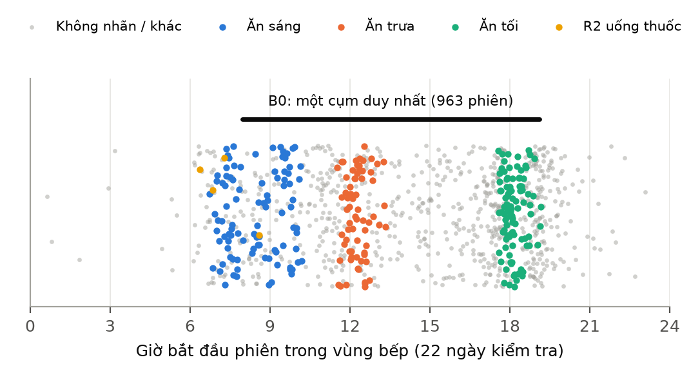
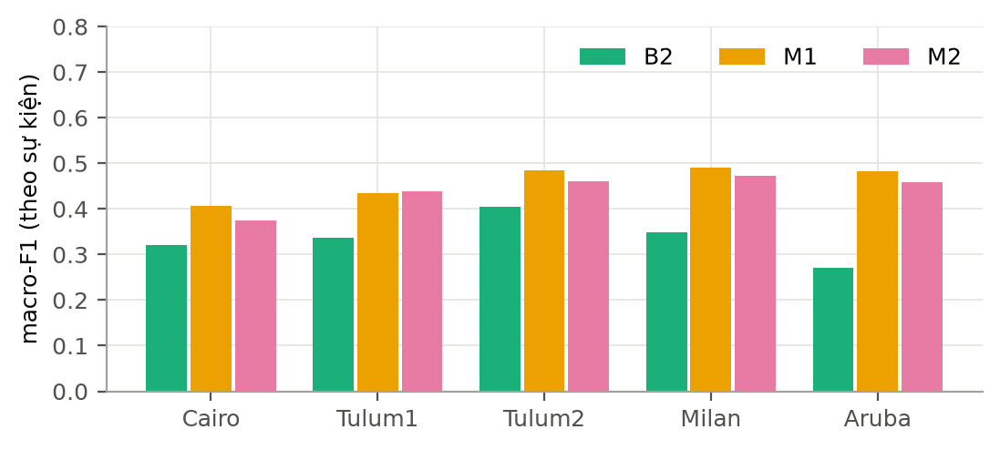
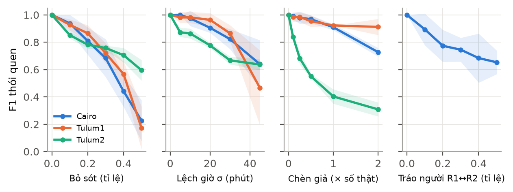
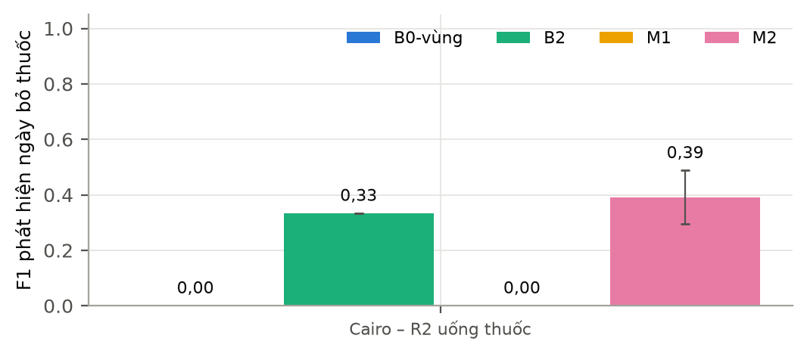

Kết quả · RQ2
Thói quen tìm được so với đáp án

0,50–0,71
M1+H, nhà 2 người
0,22–0,33
B0, nhà 2 người
- Tách vệt theo vị trí (B1) còn tệ hơn B0.
- Khi thói quen gắn chặt “vùng + giờ” (Tulum2, Aruba), tra bảng đã ngang mô hình học.
Bài toán: từ luồng cảm biến trộn lẫn của nhà hai người, tìm đúng thói quen của từng người, và dùng thói quen để phát hiện ngày bỏ thuốc.
| Hoạt động | Người | Giờ trung vị | Cảm biến kích hoạt nhiều nhất |
|---|---|---|---|
| Thức dậy | R1 | 06:44 | M005, M001 (tầng trên) |
| Thức dậy | R2 | 07:04 | M005, M009 (tầng trên) |
| Uống thuốc | R2 | 07:20 | M021, M024 (bếp) |
| Ăn sáng | chung | 07:29 | M024, M021 (bếp) |
Gán sự kiện cảm biến cho đúng (người, hoạt động) chính xác đến đâu?
Thói quen từng người tìm được đúng đến đâu? Lỗi nhận dạng lan truyền sang thói quen thế nào?
Thói quen có phát hiện được ngày bỏ thuốc không?
| Công trình | Nhà nhiều người | Đầu ra là thói quen | Đánh giá mức thói quen |
|---|---|---|---|
| Chen 2021 — luận án TS (định hướng chính) | ✓ | — | — |
| sMRT 2021; Chen, Cumin và cộng sự 2026 (theo dõi cư dân) | ✓ | — | — |
| DISCOVER 2025 (mẫu sinh hoạt) | — | ✓ | một phần |
| X-BCD 2026 (thay đổi hành vi) | — | thay đổi hành vi | — |
| Khóa luận | ✓ | ✓ | ✓ |
Nhóm nhà nhiều người dừng ở mức sự kiện/hoạt động; nhóm mẫu sinh hoạt mới làm với nhà một người. Khóa luận đứng ở giao điểm.
| Nhà | Số người | Ngày dùng | Huấn luyện / kiểm tra | Cảm biến | Hoạt động | Hoạt động gắn người |
|---|---|---|---|---|---|---|
| Cairo | 2 | 56 | 34 / 22 | 32 | 13 | 6 |
| Tulum1 | 2 | 84 | 50 / 34 | 20 | 10 | 3 |
| Tulum2 | 2 | 137 | 82 / 55 | 36 | 16 | 2 |
| Milan | 1 | 61 | 37 / 24 | 33 | 15 | 0 |
| Aruba | 1 | 220 | 132 / 88 | 41 | 11 | 0 |
Thói quen của hoạt động a: một giờ c sao cho số ngày phân biệt có a bắt đầu trong [c − 30′, c + 30′] chiếm ≥ 50% số ngày; giữ đỉnh; hai thói quen cùng hoạt động cách nhau ≥ 60′.
| Thuật toán | Cairo | Tulum1 | Aruba |
|---|---|---|---|
| Quét cửa sổ | 1,00 | 1,00 | 1,00 |
| DBSCAN | 0,90 | 0,92 | 0,38 |
| HDBSCAN | 0,61 | 0,22 | 0,52 |
DBSCAN tạo cụm như "Personal_Hygiene 09:43–23:49".
| Mã | Cách tiếp cận |
|---|---|
| B0 | Phương pháp nền: phiên theo vùng + DBSCAN, không tách người |
| B1 | B0 + tách luồng thành “vệt” theo vị trí (ý tưởng chương 3 của Chen 2021) |
| B2+H | Tra bảng P(hoạt động | vùng, khung 30 phút) + định nghĩa thói quen |
| M1+H | Random Forest trên cửa sổ 20 sự kiện (có đặc trưng “nhảy xa” báo hiệu 2 người) |
| M2+H | Bi-GRU trên chuỗi 30 sự kiện |
| Oracle | Nhãn thật — giới hạn trên (= 1 theo cấu trúc ⇒ mọi sai lệch đến từ khâu nhận dạng) |

Vùng bếp Cairo: ăn sáng, trưa, tối và uống thuốc bị gộp thành một cụm 963 phiên. Hai người đi lại xen kẽ làm phiên vụn (trung vị khoảng 2 phút).



Chịu được: lệch giờ ≤ 10 phút (F1 0,98); chèn giả ngẫu nhiên (50% → 0,97).
Nhạy với: bỏ sót (20% → 0,81); tráo người R1↔R2 (20% → 0,77); lỗi có hệ thống.
Tulum2 nhạy hơn vì thói quen của nó chỉ vừa qua ngưỡng 50%. Làm nhiễu nhãn thật có kiểm soát, 5 hạt giống.

Sản phẩm v1: mã nguồn (20 kiểm thử, tái lập bằng một lệnh) · khóa luận LaTeX 5 chương · slide · báo cáo tiến độ.
Trên nhãn thật, HDBSCAN chỉ khớp định nghĩa ở mức F1 0,22–0,75. HDBSCAN và DBSCAN giữ làm thí nghiệm so sánh.
12/22 ngày kiểm tra của Cairo không có nhãn uống thuốc — không phân biệt được “bỏ thuốc” với “không ghi nhãn”.
Kế hoạch v2 (12/2026 – 2/2027): nhiều lần chia theo thời gian (khoảng tin cậy) · giảm thói quen giả · phân tích nhầm lẫn có hệ thống · xin thêm dữ liệu ARAS.